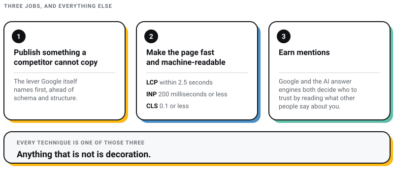
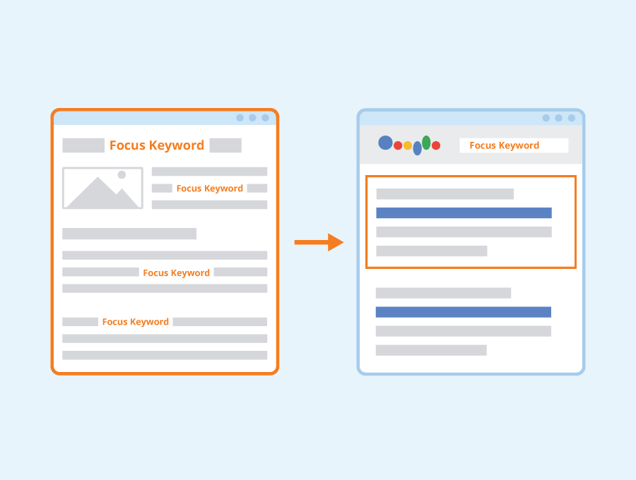
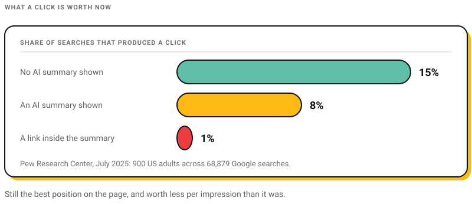
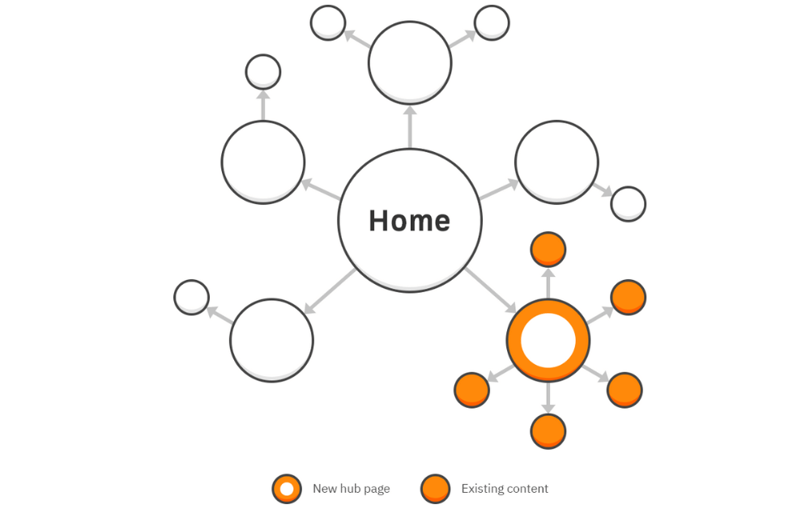
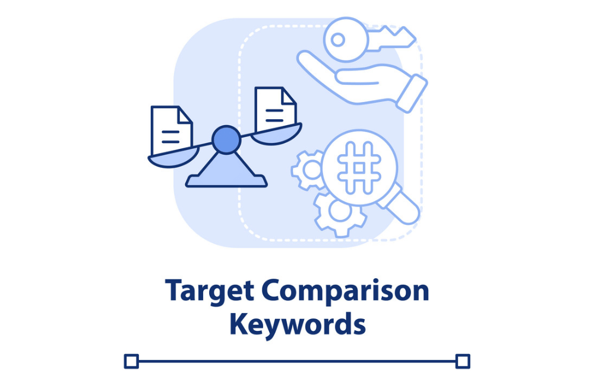
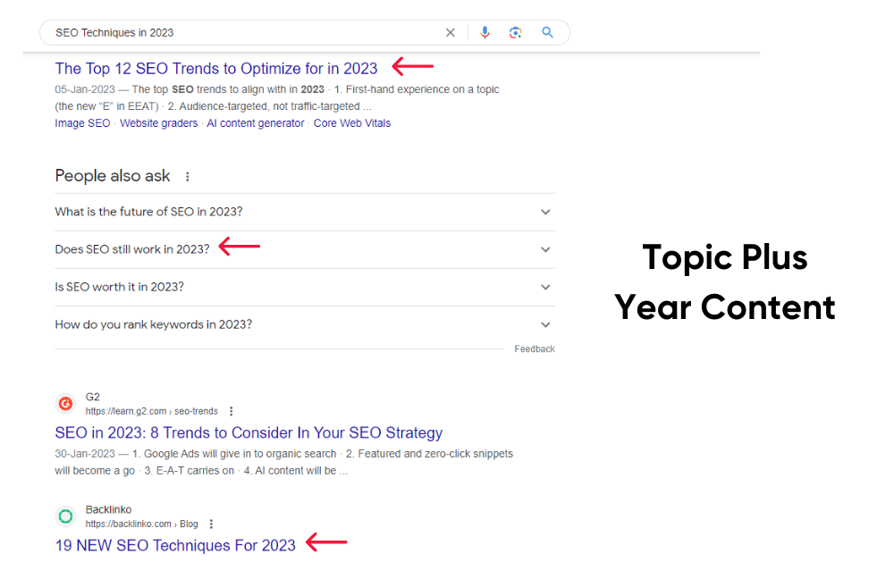
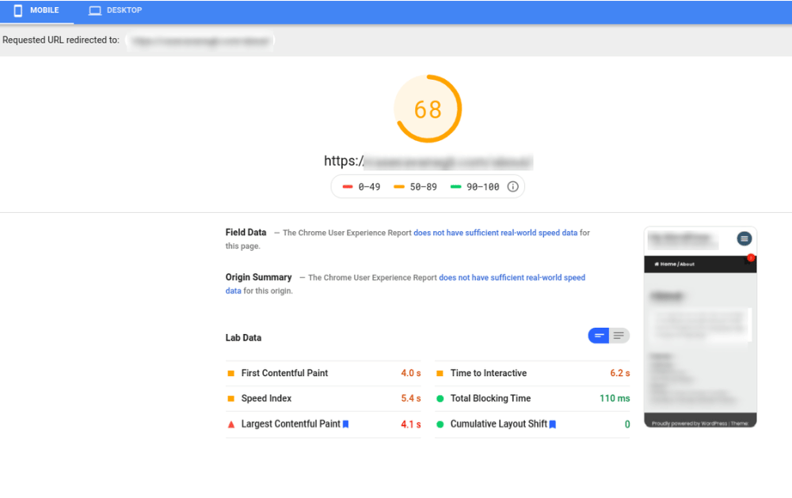
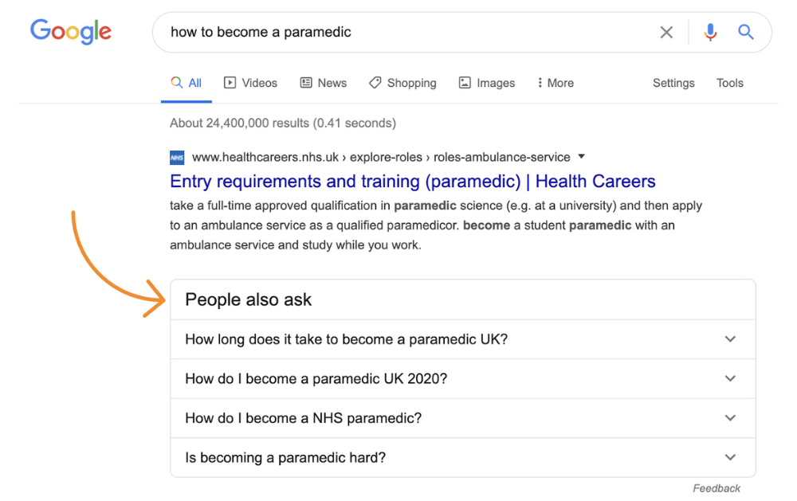
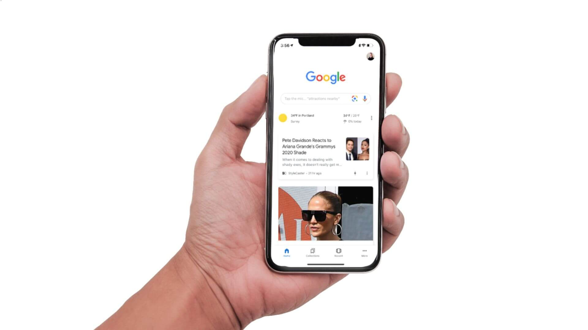

Digital Marketing
Digital Marketing
AEO vs GEO vs SEO: What Actually Matters in 2026 (And What Is Just Noise)
Learn about AEO vs GEO vs SEO. Discover what changed with AI search, what still matters, and how to optimize for Google AI Overviews, ChatGPT, and…

I run Pixel Street, a web design studio in Salt Lake, Kolkata. We build and rank sites for brands like Coca-Cola, ITC and Marico. Most of the advanced SEO advice still circulating is not merely dated. It is wrong.
The technique usually listed first rests on a statistic that never existed. Plenty of these lists still tell you to optimise for a Core Web Vital that Google deleted in March 2024, or sell you a schema type that stopped producing anything in Google in May 2026. Every technique below is checked against primary documentation, and the six claims that do not survive that check are named at the bottom rather than left to circulate.
Fourteen techniques. The shape of the list is conventional; most of what is in it is not.
Advanced SEO in 2026 is three jobs. Publish something a competitor cannot copy, because that is the lever Google itself now names first. Make the page fast, stable and readable by machines: LCP within 2.5 seconds, INP of 200 milliseconds or less, CLS of 0.1 or less. Then earn mentions, because Google and the AI answer engines both still decide who to trust by reading what other people say about you. Every technique below is a specific way of doing one of those three. Anything that is not is decoration.

Six corrections, all checkable against a primary source rather than against another agency’s blog post.
| What you will still be told | What is true in July 2026 |
|---|---|
| Optimise First Input Delay alongside LCP and CLS | FID stopped being a Core Web Vital in March 2024. The three are LCP within 2.5 seconds, INP of 200 milliseconds or less, and CLS of 0.1 or less, per Google’s own web.dev definition. If you have read that LCP tightened to 2.0 seconds, that is a rumour, and it contradicts the primary document. |
| Google judges pages on E-A-T | E-E-A-T since late 2022, with Experience added in front. Google’s wording in its helpful content documentation, updated 10 December 2025: “Of these aspects, trust is most important.” |
| FAQ schema earns you extra room in the results | Google stopped showing FAQ rich results on 7 May 2026. The markup is still valid; it simply buys nothing in Google now. |
| Track algorithm updates on Search Central | That page redirects to the Search Status Dashboard. Recent entries: the March 2026 core update (27 March to 8 April), the May 2026 core update (21 May to 2 June) and the June 2026 spam update (24 to 26 June). |
| Rank in the top ten and AI will quote you | 38% of AI Overview citations come from pages ranking in Google’s top ten, down from roughly 76% in July 2025 (Ahrefs, March 2026, across 863,000 keyword SERPs). |
| AI search needs its own separate playbook | Google published guidance on 15 May 2026 saying the opposite: optimising for generative AI search “is optimizing for the search experience, and thus still SEO.” |
That last row is the one that reorganised this whole list. Google’s guidance names its first-order lever plainly: “Creating content that people find unique, compelling, and useful will likely influence your website’s presence in generative AI search in the long run more than any of the other suggestions in this guide.” More than schema. More than structure. More than anything an agency can put a delivery date against.
Which is why the list starts here rather than with a technical trick.
Google’s own illustration of the difference is a pair of titles: “7 Tips for First-Time Homebuyers” against “Why We Waived the Inspection & Saved Money.” The first is common knowledge with a byline attached. The second could only be written by someone who did it.
Let me tell you what specificity looks like. Four years ago I made a cold call to ITC with a fancy deck and zero credibility. Today we design for them, and for Coca-Cola and Marico. That sentence describes exactly one agency. That is the kind of fact a machine can attach to a name, and no competitor can copy it into their own post.
Most of what gets published in this category fails that test, plenty of mine included. It restates the consensus competently. A model already knows the consensus, so it has no reason to quote you for it. The uncomfortable part is that this is the hardest item on the list and the only one you cannot buy.
Practically: before publishing, find the one paragraph in the draft that nobody else could have written. If there isn’t one, the page is not ready, however good the schema is.

Source: seobility
One page, one job. A page trying to rank for six loosely related phrases usually ranks for none of them, because none of the six is answered properly.
Two housekeeping notes. The tool is Google Keyword Planner; AdWords stopped being its name years ago. And search volume is the second question, not the first. The first is what the searcher actually wants:
| Intent | What the searcher wants | Example | Page that wins |
|---|---|---|---|
| Navigational | A specific site or brand | pixel street kolkata | Your homepage. Nothing else can win it. |
| Informational | To understand something | what is interaction to next paint | A guide that answers in the first screen. |
| Commercial investigation | To compare before deciding | shopify vs woocommerce | An honest comparison, including where your option loses. |
| Transactional | To buy or enquire now | web design company in kolkata | A service page with pricing, proof and a form. |
Mismatched intent is the most common reason a technically clean page never moves. A service page cannot win an informational query no matter how many links it has. We set out the full process in our guide to keyword research.
Featured snippets are still live. Google’s documentation, updated 10 December 2025, still describes the feature, and is blunt about how you request one. Can you mark up for it? “You can’t.” Google’s systems decide whether a page would make a good snippet and elevate it. There is no schema, no tag, no submission.
What you control is whether a clean answer exists on the page: the question restated, then a direct answer of two or three sentences, then the detail. You also control the opposite. The nosnippet rule blocks snippets entirely and max-snippet limits them, which matters if you would rather force the click than give the answer away.
Be clear-eyed about what winning one is worth now. Pew Research Center tracked real browsing behaviour from 900 US adults across 68,879 Google searches: users clicked a traditional result on 8% of searches that carried an AI summary, against 15% of searches without one. Clicks on the links inside the summary itself came to 1% (Pew Research Center, July 2025). Being the extracted answer is still the best position on the page. It is worth less per impression than it was, and I would rather tell you that than sell it as a golden ticket.

Source: resumeworded.com
Journalists search for the same three things: a number, a source who will go on record, and a chart they can reuse. Own the phrase they type when they need one, and the links arrive without an outreach email.
The practical version is to publish the figure nobody else in your category has bothered to count, from your own data, with your method written out. This is the one link-building tactic that has not been degraded by anything Google has shipped, because it produces the thing links are supposed to signal.
What has been degraded is the paid version. Google’s spam policies, updated 15 May 2026, name “links with optimized anchor text in articles, guest posts, or press releases distributed on other sites” as link spam, and now carry a separate site reputation abuse policy for third-party content published on a host site mainly to borrow that host’s ranking. If someone is selling you guest posts by the dozen, they are selling you the thing the June 2026 spam update was built to find.

Source: ahrefs.com
A hub is one page that covers a subject properly and links out to the pages covering each part of it in depth. This page is one.
The reason hubs work is unglamorous. Internal links are the only links you fully control, and a page nothing links to is a page you have asked Google to guess about. When we audit a client’s blog, the most common finding is not thin content. It is forty posts with no internal links at all, each one a dead end.
One warning drawn from the same Google guidance. Its advice on AI visibility explicitly rejects the fragmenting trend: “There’s no requirement to break your content into tiny pieces for AI to better understand it.” A hub is not licence to split one good article into nine thin ones.

Source: vectorstock.com
“X vs Y” queries come from people with a decision to make and a budget already approved. They convert better than almost anything else you can rank for, and they suit a table better than prose.
The catch is that they only work if you are willing to lose one. A comparison page where your option wins every row reads as marketing and gets treated as such by readers and by models summarising the category. Our Shopify versus WooCommerce comparison recommends against us on projects below a certain complexity, and it earns more enquiries than the pages that only flatter us.
Compare on the axes buyers actually weigh: total cost after a year, who maintains it, what happens when you want to leave.
Stock illustration signals nothing. A screenshot of your own dashboard, a photograph of the actual work, a chart from your own numbers, all signal that someone was present. That is the Experience in E-E-A-T, and it is the part of the framework you can demonstrate rather than assert.
Three specifics worth getting right. Give every image alt text that describes it, because that text is what a machine reads and what a screen reader speaks. Keep your lead image at least 1200 pixels wide and enable max-image-preview:large, which is what Google’s Discover documentation asks for. And attribute anything you did not make, including the borrowed images on this page, which are credited under each one.

A year in the title is a promise, and Google has written down what it thinks of people who break it. From its own self-assessment questions: “Are you changing the date of pages to make them seem fresh when the content has not substantially changed?” It sits in the same list as “Is the content primarily made to attract visits from search engines?”
So the technique survives, with a condition attached. Put the year in the title only in the same edit where you actually redo the work. Swapping the digits and republishing is precisely the behaviour Google’s own warning describes, and it is what most annual refreshes amount to.
My rule: if the diff is smaller than a paragraph, leave the year alone.

Source: hubspot.com
This gets filed under page loading speed, and the name is the problem. Loading is one of three things being measured, and the one most people fix first is not the one most sites fail.
Interaction to Next Paint replaced First Input Delay as a stable Core Web Vital in 2024. FID measured only the delay before the browser started responding to your first tap, which flattered almost everybody. INP measures how long until you actually see a result, across the whole visit. Plenty of sites that passed FID comfortably fail INP, and the culprit is usually the same: too much JavaScript on the main thread, most of it belonging to a tag manager nobody has audited in two years.
The thresholds, from web.dev: LCP within 2.5 seconds, INP of 200 milliseconds or less, CLS of 0.1 or less, measured at the 75th percentile of real visits. Chase field data, not a lab score. A 98 in Lighthouse on your office fibre says nothing about a buyer on a mid-range Android phone on mobile data in Kolkata, and that buyer is who the field data is describing.
Two things to stop doing here. Do not build AMP pages for this; Google removed the AMP requirement from Top Stories when the page experience update shipped, as announced in May 2020, and there is no ranking advantage left to collect. And do not look for the Mobile-Friendly Test: Google retired that tool, its API and the Mobile Usability report on 4 December 2023. PageSpeed Insights and Lighthouse are where this lives now.
Video earns attention on YouTube and on social platforms. It does not, on its own, make the page it sits on rank, and a video embedded on a thin page leaves the page thin.
What genuinely helps the page is the transcript, because a transcript is text and text is what gets indexed, quoted and summarised. Publish it as readable prose on the page rather than hiding it behind a toggle. The same applies to a webinar, a podcast episode or a client walkthrough. Treat video as its own channel, and the transcript as the SEO asset it produces.

Source: ahrefs.com
People Also Ask remains the cheapest question research available. Type your main query, open the box, and read the exact words in which real people phrase the problem you solve. Those phrasings belong in your headings.
What has changed is why you use them. This is no longer a box you farm for extra listings; it is a transcript of your buyers’ vocabulary. Google’s AI guidance is explicit that formatting for machines is not the play: “You don’t need to write in a specific way just for generative AI search.” Use the questions because readers ask them. That the structure also happens to suit an extraction system is a side effect, not the reason.
The failure mode is a page stuffed with eleven question headings, each answered in one sentence. That is a page written for a box rather than a person, and it reads like one.
This is the most boring item here and the one I have seen block the most upside. Search access and training access are separate permissions, and most site owners do not know they are separate.
OpenAI splits OAI-SearchBot, which governs whether you can appear in ChatGPT’s search answers, from GPTBot, which is about training. Anthropic splits Claude-SearchBot from ClaudeBot. Perplexity has its own pair. So a site can block training to protect its content, believe it stayed visible in answers, and have quietly done the reverse. Read your robots.txt as a decision rather than as something your host set for you.
Two newer controls belong in the same conversation. Search Console gained generative AI performance reports on 3 June 2026, covering AI Overviews and AI Mode. They report impressions by page, country, device and date, and no click data at all, so they tell you that you appeared without telling you what appearing earned. Google also began testing a toggle to opt out of AI features entirely, initially for a subset of site owners in the UK (Search Engine Land, June 2026). If it reaches you, treat it as a business decision rather than a technical one. We set out the wider picture in what AEO and GEO actually mean.
Someone has already written your name without linking to you. Google Alerts and mention monitoring will find them, and a short, specific email asking the author to link the mention they already made is the least awkward outreach in this business. You are not asking for a favour; you are pointing out an omission.
Conversion rates get quoted for this tactic as though they were general benchmarks. I could not find a method behind any of them, so I am not going to give you a number to plan against.
The mention itself has become worth more than it used to be. AI answer engines assemble a view of your business from what is written about you across the web, linked or not. An unlinked mention on a page a model reads still contributes to whether your name comes up. Chase the link, and count the mention as a result on its own.

Source: Search engine land
Discover is a feed, not a results page. Nobody typed a query, so nothing you do about keywords matters here. What matters is whether the card is worth a thumb stopping on.
Google’s Discover documentation, updated 9 March 2026, sets out the mechanics. There is no markup to add: pages are eligible if they are indexed and meet the content policies. Large images do the heavy lifting, at least 1200 pixels wide with max-image-preview:large enabled. And the documentation warns against titles that use “clickbait and similar tactics” or that exploit “morbid curiosity, titillation, or outrage” — worth reading twice, because Discover traffic tempts otherwise sober businesses into writing headlines they would be embarrassed to print.
One thing people routinely get wrong: Discover performance is reported in Search Console, not in Google Analytics. Analytics can tell you what the visit did; only Search Console tells you the impression happened. Google also ran a dedicated Discover update from 5 to 27 February 2026, so if your feed traffic changed shape early this year, that is the likely cause rather than anything you did.
Source: searchenginejournal.com
All six are still repeated in blog posts, decks and proposals. Each is false, and each is checkable in a couple of minutes.
Deleting a number costs nothing except the paragraph that leaned on it. Keeping one you cannot source costs your credibility the first time a reader checks.
If you have one week rather than one quarter, ignore twelve of these. Pull your Core Web Vitals field data and fix whichever of the three you are failing. Then take your five highest-intent pages and add, to each one, a paragraph nobody else could have written.
That is it. Structure, schema and feeds are worth doing after those two, and worth very little before them. Google spent 2026 telling anyone who would listen that distinctiveness outranks formatting, and it is the least convenient advice in the industry because it cannot be delivered by a checklist.
Speaking of which, the pre-launch version of ours is in our SEO checklist, and if you would rather have someone else run all of it, that is what we do at Pixel Street.
Is First Input Delay still a Core Web Vital?
No. Interaction to Next Paint replaced it and became a stable Core Web Vital in 2024; FID is no longer part of the set. The current three and their thresholds are LCP within 2.5 seconds, INP of 200 milliseconds or less, and CLS of 0.1 or less, measured at the 75th percentile of real visits. If a proposal you are reading still lists FID, it was written before March 2024 or copied from something that was.
Should I still add FAQ schema to my pages?
Not as a way to win space in Google. FAQ rich results stopped appearing on 7 May 2026. The markup remains valid and harmless, so there is no urgency to strip it out, but nobody should be charging you for it as a visibility tactic. A genuine FAQ section still earns its place by answering what readers ask.
Is voice search optimisation still worth doing separately?
No, and the statistic that justified treating it as a separate discipline was never real. Spoken queries tend to be longer and more conversational, which is handled by writing in plain sentences and answering questions directly. That is the same work as everything else on this list, so it does not need its own line item or its own invoice.
Do I need to write differently so AI engines quote me?
Google says no, in its own guidance from 15 May 2026: “You don’t need to write in a specific way just for generative AI search,” and “There’s no requirement to break your content into tiny pieces for AI to better understand it.” What it does say to do is publish something unique and useful. The formatting advice being sold as AI optimisation is largely SEO with a new name on the invoice.
How long before any of this shows up in rankings?
Technical fixes such as Core Web Vitals and internal linking are usually visible in field data within weeks, since you are measuring your own site rather than waiting on a ranking. Content and authority work moves on Google’s schedule, not yours, and every core update on Google’s status dashboard since March 2025 has taken roughly twelve to eighteen days to roll out. Expect to be measuring across months, and expect a core update to reshuffle things at least twice a year.
Does any of this work differently for a business in Kolkata?
The mechanics are identical; the competitive maths is not. In a city where most competitors in a category have never published anything a journalist could cite, technique 1 and technique 4 are unusually cheap to win. The other difference is device: a large share of your visitors will arrive on mid-range Android phones on mobile data, which makes INP and LCP a commercial problem rather than a technical vanity metric.
18 min read 21 cited sources Digital Marketing
Author
Khurshid Alam is the founder of Pixel Street, an AI-native design & development studio. Design thinking on weekdays and spreadsheets on weekends.
He writes about growth, design, and AI, mostly because someone has to say the quiet parts out loud.
Digital Marketing
Learn about AEO vs GEO vs SEO. Discover what changed with AI search, what still matters, and how to optimize for Google AI Overviews, ChatGPT, and…
 Digital Marketing
Digital Marketing
Discover the 5 reasons ChatGPT recommends your competitors instead of your business—and how to improve AI visibility, SEO, GEO, and AEO.
 Digital Marketing
Digital Marketing
Want ChatGPT to recommend your brand? Learn how AI chooses businesses, where citations come from, and practical ways to increase your visibility.
 Digital Marketing
Digital Marketing
Imagine stumbling upon a secret formula that not only boosts your content’s visibility but also ensures it towers over the competition. That’s exactly…


{kind=link}
{kind=link}
{kind=link}
{kind=link}
{kind=link}
{kind=link}